| Class | Days | Time |
|---|---|---|
| CSCI 135 (LEC) | Monday, Thursday | 8:10 - 9:25 |
| CSCI 135 (REC) | Monday | 9:45 - 11:35 |
| MATH 150 | Monday, Thursday | 1:10 - 3:00 |
| SPAN 101 | Tuesday, Friday | 11:10 - 12:25 |
| SOC 101 | Tuesday, Friday | 12:45 - 2:00 |
| ENGL 120 | Tuesday, Friday | 2:10 - 3:25 |
September 8th is my birthday!! It was a Tuesday so I still had school but it was only two classes so it was all good. I spent the day at my best friend, Sharmin's house. We went to all of our classes together but did we pay attention? Of course not! I was opening gifts and we were just talking and playing games. After our classes we ate lunch that her mom cooked (it was so good!) and watched the office. For the rest of the day we chilled, took selfies, and played monopoly.
This was the Saturday after my birthday so I spent the day celebrating out with my two friends, Sharmin and Mahrukh. This day had a packed schedule but it was super fun. First we all met up at the bus stop and the first place we went was psychic readings by Vienna. None of us believed in psychic readings but we thought it would be fun. When we got there, we started to get a little scared but the woman was very nice. Mahrukh was too scared to get a reading so only Sharmin and I did it. Sharmin got a palm reading and I got a face reading. When we left, I wrote the fortune down in my notes just so I could look back at it and see if anything she said really did happen. The next thing we had to do was go to a tattoo shop. Since I was now 18, it was no longer illegal for me to get a tattoo! I made an appointment at sunset park tattoo studio so after the psychic reading, we took the train to the tattoo studio. On the way, we had a small photoshoot in the train and train station. We still had time so we decided to get food before the tattoo. Sharmin and I got tacos and Mahrukh got a burrito. To be honest, the food was not that good (the radishes were the best part!). Finally it was time for the tattoo. I got the word "8TEEN" on the middle of my back. It was a very quick process and it didn't hurt at all! After the tattoo we went for dessert at J Petal, a place that sells Japanese crepes and Thai ice cream. We all got ice cream and went to sunset park to eat it. We spread a blanket, chilled, took selfies, and just talked. Then we all took the bus home and rested because it was a fun but busy day!!
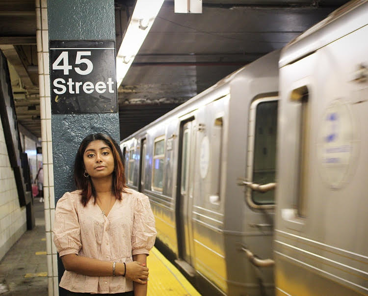 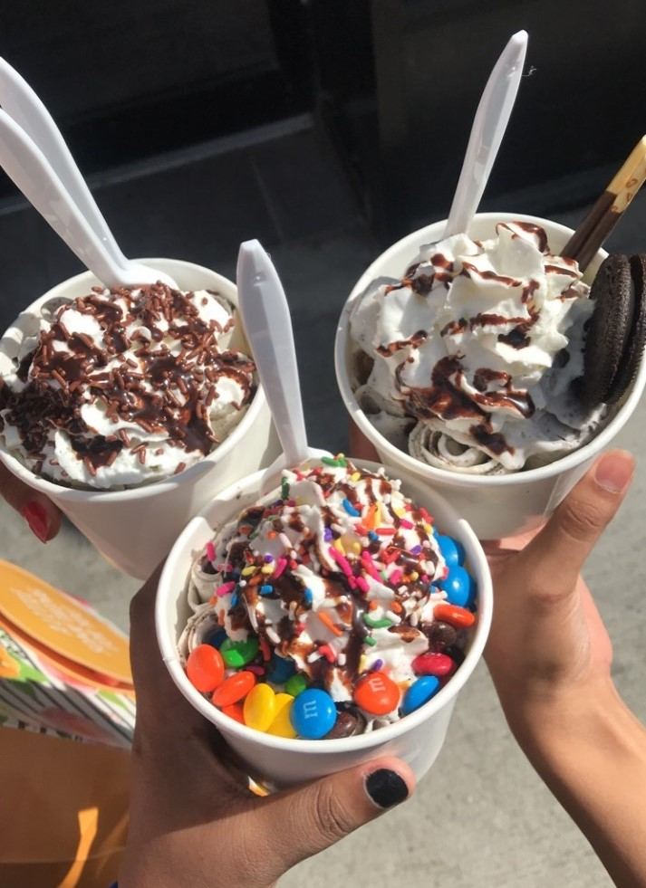 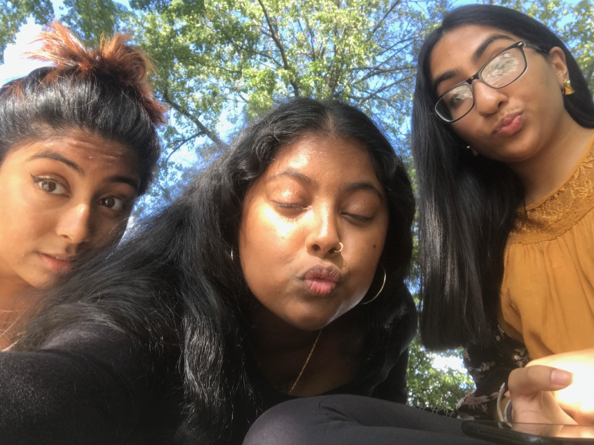 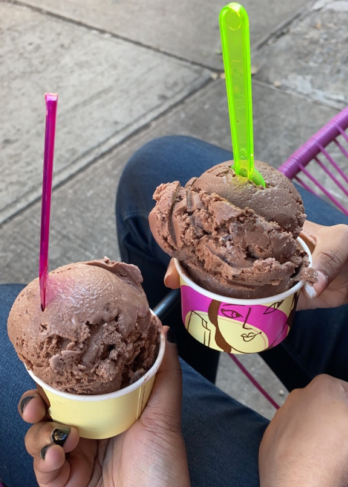 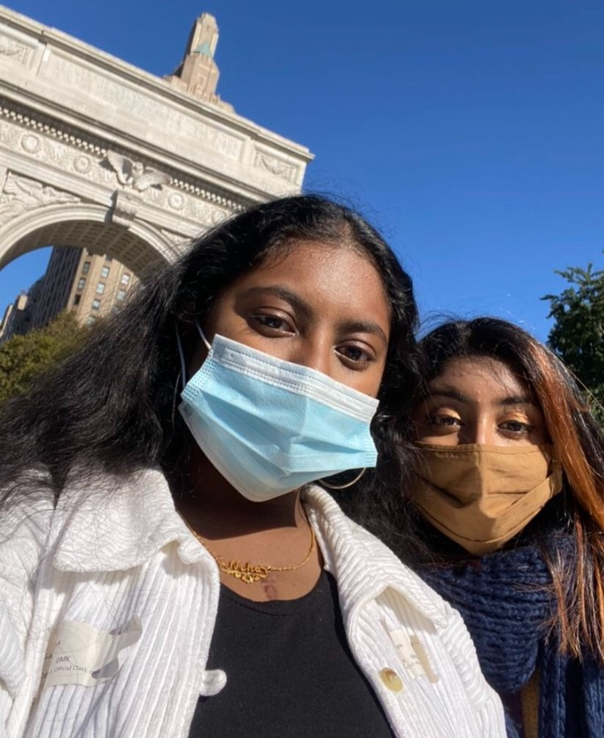October 17th is Sharmin's birthday!! Her birthday conveniently fell on a Saturday so we were able to hang out. First we took the train to Paesano, an Italian restaurant. Their food was really good, I highly recommend. The restaurant was near Washington Square Park so we walked there to take photos and relax. When we got there, there was a dog park so I had to stand and watch the cute doggies for a good 5 minutes!! Then we got to the middle of the park and took photos. After that, we found a nice bench and just sat and talked. Then we went to La NewYorkina, an ice cream shop. We both got chocolate ice cream! We then took the train home and chilled.
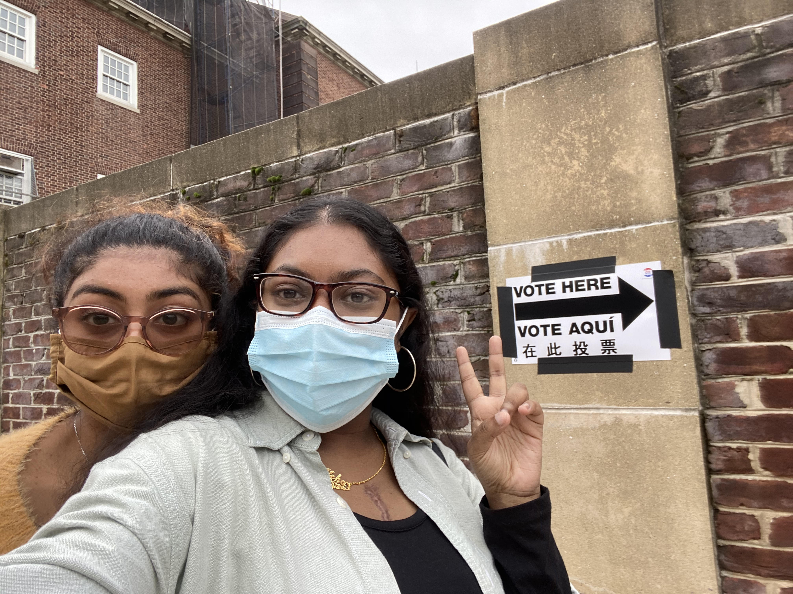My mom, brother and I decided to vote early. When we got to our voting site the line was about 5 blocks long! I was ready to go back home but my mom made me stay because she said the line would be that long everyday. Half way through the 5 blocks, I called Sharmin and told her to come join us in the line so she wouldn't have to wait too long. And also to bring water and snacks 😊. When she got there, we were only one block away. It was about a 2 hour wait in total! Once we got in the voting site, we had to show our IDs and get the ballot. Then we went to the little booths to bubble in our answers. We handed in the completed ballots and that was it! We had just voted!! It was a very simple and easy process and the 2 hours wait time was definitely worth it.
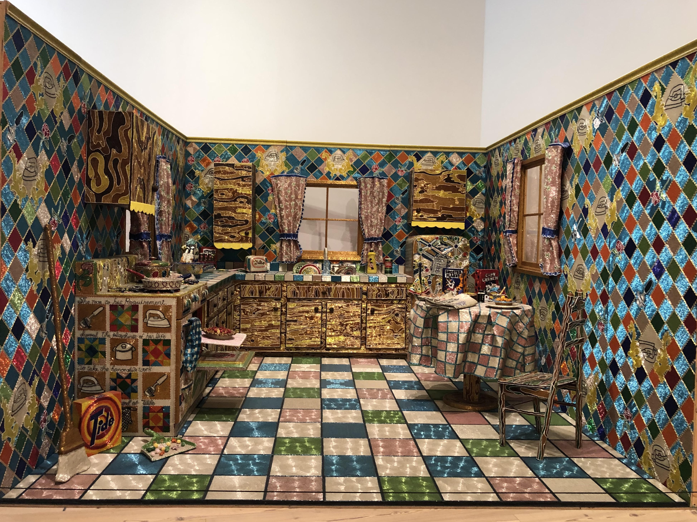This day, my now boyfriend, Tanmoy, and I hung out. We were just friends at the time and were meeting for the first time. We met up at the train station and walked to Hudson River Park where we just killed time by walking and talking. I must say, we vibed really well and I already knew it was going to be a good day. We had tickets to the Whitney Museum of American Art for 12:15pm so when the time came we headed over there. I was an interesting museum that had all kinds of art, some of which we appreciated and some, well not really. Later that day we also had reserved a time to walk the highline. I've always wanted to walk the highline and surprisingly, so did he! It was long but calming and peaceful walk. We talked about literally everything! At the end of the highline is Hudson Yards. We went to Hudson Yards Mall, visited some stores, and bought food at Shake Shack. We ate the food outside and after some more strolling around, we went home.
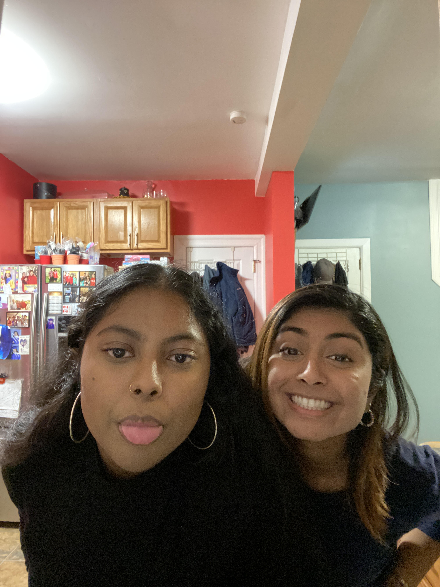 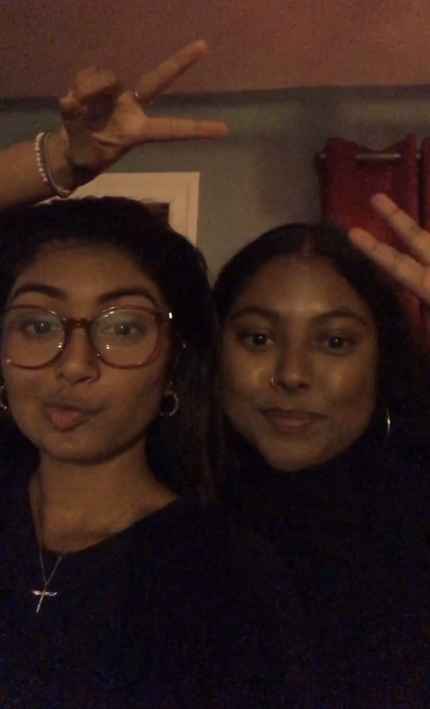Sharmin came over to help with Thanksgiving preps and to help put up the Christmas tree on this day! It was a Tuesday so I still had class but it left early. My brother and I went to pick Sharmin up from her house and she got 2 pizza pies for the whole family to have for dinner. Once we arrived home, we got to work. We went to the attic and brought down the Christmas tree, the ornaments, garland, and so much more decorations. We set up the tree, put on some music and started to place the ornaments. It was really fun and calming. We put up all the other decorations around the house and then got started on the turkey. First the turkey had to soak for some hours so we filled up the basement sink and put the turkey in there. That was such a difficult and funny process because neither of us had ever done that before. We decided to take a break and have a photoshoot until my mom came home. Once my mom got home, she got us started with the cooking preps. She gave us no breaks other than to eat dinner which we took advantage of 😊. Later that day we dropped Sharmin back home. She was such a great help to my family and I during the holidays!
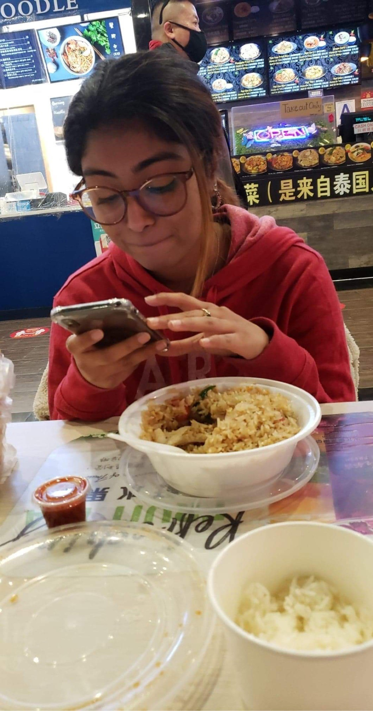 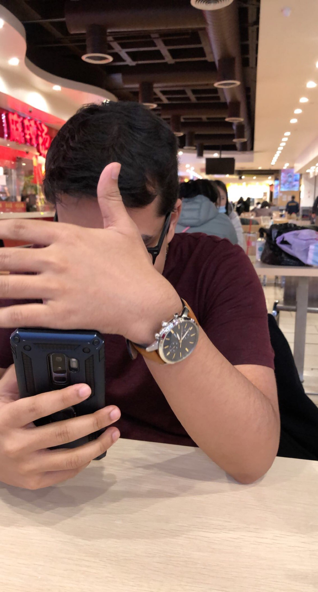On this day Tanmoy and I hung out for the second time and this was also the day that we started dating! ❤ First we met up at the train station and then walked to The Shops at SkyView Center. We walked around there and went to a couple stores so we could kill time waiting for the pool hall to open. Once it was time, we walked over to Prince Billiards to play pool. We played 3 games and oof did he look hot while playing them. While we played, he also helped me, because it was not only about winning, but also about learning. Then we went to get food. We chilled, talked, and ate until it was time to part ways. He walked me to the train station and he went to take the bus. It was a really good day and I had so much fun.